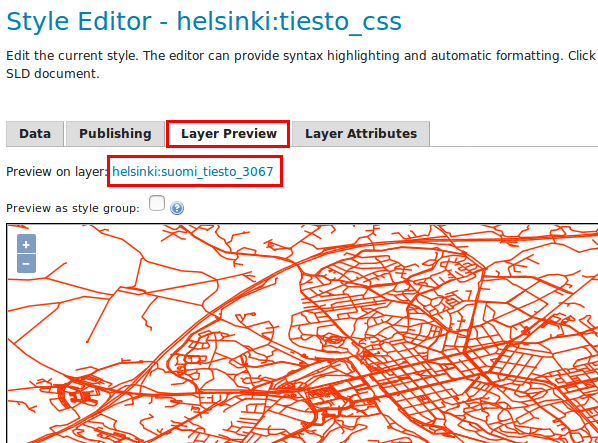
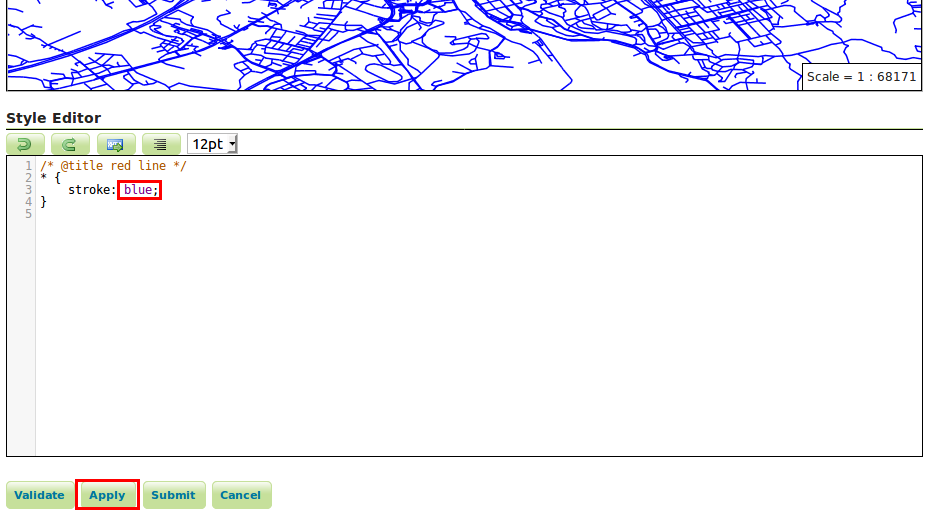
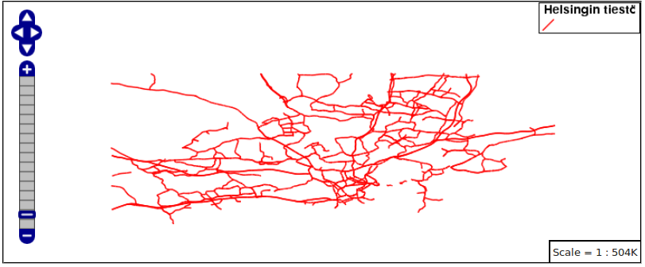
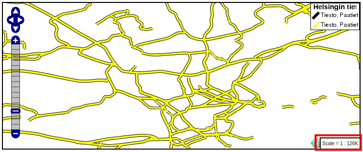
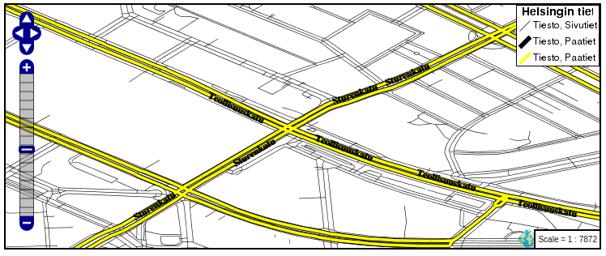
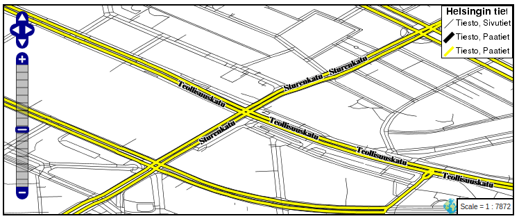
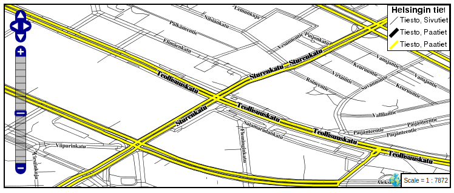

HARJOITUS 2.4: CSS-KUVAUSTEKNIIKKA
Harjoituksen sisältö
Harjoituksessa käsitellään eri aineistoille sovellettavia kuvaustekniikoita ja hyödynnetään CSS-tyylejä karttojen visualisoinnissa.
Harjoituksen tavoite
Harjoituksen jälkeen opiskelija osaa hyödyntää peruskuvaustekniikoita GeoServerillä eri aineistojen visualisointiin käyttäen CSS-kieltä.
Arvioitu kesto
40 minuuttia.
Valmistautuminen
Erilaisia aineistoja on ladattu GeoServer-palvelimelle. CSS-lisäosa on asennettu GeoServeriin.
CSS-tyylit
Kun CSS-lisäosa on asennettu, voidaan kirjoittaa kuvaustekniikkatyylejä CSS-kielellä, joka SLD-kieleen verrattuna on käyttäjäystävällisempi tapa muokata kuvaustekniikkaa.
Lisäosa toimii niin, että CSS-kielellä kirjoitettava koodi kääntyy SLD-kieleksi automaattisesti.
Tyylin luominen
Luodaan nyt uusi tyyli tiesto-tasolle.
Avaa päävalikosta Styles ja paina Add a new style.
Määrittele uuden tyylin nimeksi tiesto_css ja jätä workspace-kohta tyhjäksi.
Valitse Style Content valikosta geometriatyypiksi Line ja paina Generate.
Style Editor -laatikossa on nyt seuraavankaltainen teksti:
/* @title red line */
* {
stroke: #ff3300;
}
Paina Submit. Avaa Styles-valikosta juuri luomasi tyyli ja valitse Layer Preview -välilehti. Valitse esikatseltavaksi tasoksi tiestötaso.
Lähennä karttaa siten, että tiet alkavat näkyä kunnolla.
Pystyt muokkaamaan CSS-koodia myös Layer Preview -välilehdellä. Huomaa merkki “*”. Se tarkoittaa, että sääntö koskee kaikkia kohteita (samoin kuin *-merkki esimerkiksi tiedostojen listauksessa komentoriviltä). 
Vaihda nyt stroke-komennon arvoksi blue.
* { stroke: blue;
Paina Apply ja esikatsele karttaa. Nyt tiet näkyvät kartassa sinisinä. 
Aineiston luokittelu
Luokitellaan nyt tiet kahteen luokkaan: päätiet ja muut. Kullekin luokalle voidaan määritellä oma tyyli.
Päätiet luokitellaan korvaamalla merkki “*” seuraavalla koodilla (huomaa, että rajauksessa käytetään type-kentän tietoja):
[type = ‘motorway’ or type = ‘primary’ or type = ‘secondary’ or type = ‘trunk’]
{ stroke: red;}
Paina Apply. Nyt vain päätiet ovat näkyvissä.
Luo nyt tyyli muille teille. 
Muokkaa CSS-tyyliä vielä seuraavasti:
Kopioi pääteiden luokitus-koodi ja laita se koodilaatikon loppuun.
Korvaa “=”-merkki “eri kuin”-merkillä “<>”, niin tulee määrittelyksi tiet, jotka eivät kuulu edelliseen luokitukseen, eli toisin sanoen pienemmät tiet.
Vaihda vielä “or”-komento “and”-komennoksi.
Kopioi sitten vielä edellisen CSS-tyylin koodinpätkä (aaltosulut ja niiden sisällä oleva koodi) ja liitä kopioitu koodi muiden teiden luokittelu-osion jälkeen.
Vaihda muiden teiden tyyli niin, että viivan väri on musta (black).
Pääteiden ja muiden teiden tyylit näyttävät nyt tältä:
[type = ‘motorway’ or type = ‘primary’ or type = ‘secondary’ or type = ‘trunk’]
{ stroke: red;}
[type <> ‘motorway’ and type <> ‘primary’ and type <> ‘secondary’ and type <> ‘trunk’]
{ stroke: black;}
Esikatsele nyt tulos painamalla Apply.

Tyylin virittäminen
Tiet ovat vielä vaikea erottaa toisistaan. Tehdään nyt pari parannusta tyyliin. Määrittele pääteiden viivan paksuus 0.5:ksi komennolla “stroke-width”. Lisää uusi rivi “stroke: red;”-kohdan jälkeen, johon kirjoitetaan “stroke-width: 0.5;”.
Määrittele samalla tavalla muille teille viivan paksuudeksi 0.1:
[type = ‘motorway’ or type = ‘primary’ or type = ‘secondary’ or type = ‘trunk’]
{ stroke: red;
stroke-width: 0.5;}
[type <> ‘motorway’ and type <> ‘primary’ and type <> ‘secondary’ and type <> ‘trunk’]
{ stroke: black;
stroke-width: 0.1;}
Paina sitten Apply niin esikatselu päivittyy: päätiet ja pienemmät tiet erottuvat paremmin.
Kokeile seuraavaksi lisätä seuraava CSS-koodi, jonka avulla luodaan pääteille selkeämpi visualisointityyli.
Poista vanha “stroke”-määrittely ensin. Tarkoituksena on visualisoida pääteitä keltaisen ja mustan viivan avulla siten, että keltainen viiva on kapeampi ja jää mustan viivan päälle. Pyydä kouluttajalta apua tarvittaessa ja korvaa pääteiden tyyli seuraavalla koodilla CSS-tyylien muokkaustilassa:
stroke: black, yellow;
stroke-width: 5px, 3px;
z-index: 0, 3;
Huomaa, että tällä tavalla määrittelet pääteille päällekkäiset tyylit, jotka muodostavat monimutkaisempia visualisointeja.
Paina vielä Submit ja visualisoi lopputulos:

Z-index -komennolla määritellään, missä järjestyksessä eri tyylit piirtyvät. Indeksin arvolla 0 viitataan mustaan viivaan, jonka paksuus määritellään viiteen pikseliin. Indeksin arvo kolme viittaa keltaiseen viivaan , jonka paksuus on kolme pikseliä. Huomaa, kuinka Z-indeksin pienemmät arvot piirtyvät ensin ja suuremmat arvot myöhemmin.
Psst! Huomaa, että esikatselun selite ei ymmärrä näitä monimutkaisia tyylejä oikein. Työkalu vaatii kehitystä, mutta nopeaa esikatselua varten kartta on riittävän hyvä.
Kokeile vaihtaa symbolien järjestystä, värejä ja paksuuksia.
Koodisi näyttäisi tässä vaiheessa tältä:
[type = ‘motorway’ or type = ‘primary’ or type = ‘secondary’ or type = ‘trunk’]
{ stroke: black, yellow;
stroke-width: 5px, 3px;
z-index: 0, 3;}
[type <> ‘motorway’ and type <> ‘primary’ and type <> ‘secondary’ and type <> ‘trunk’]
{ stroke: black;
stroke-width: 0.1;}
Luokkien nimeäminen
Lisätehtävänä voit muokata selitteen tekstejä (Legend) CSS-kielellä. Eri tasojen selitteen teksti määritellään “/* @title”-avaus ja “*/”-sulkukomennoilla, ja ne sijoitetaan ennen hakasulkujen sisään asetettuja tasomäärityksiä seuraavalla tavalla. Tämän avulla saadaan nimet näkymään esikatselukartan selitteessä, ja samalla koodin lukeminen helpottuu.
Laita pääteiden määrittelyn eteen /* @title Paatiet */:
/* @title Paatiet */
[type = ‘motorway’ or type = ‘primary’ or type = ‘secondary’ or type = ‘trunk’]
{stroke: black, yellow;
stroke-width: 5px, 3px;
z-index: 0, 3;}
Laita myös /* @title Sivutiet */: sivuteiden määrittelyn eteen samalla tavalla.
Lisää vielä koodin loppuun seuraava koodi:
/* @title Tiesto */ * { font-family: Helvetica; }
Edellä esitetty ja viimeinen taso/koodi määrittää “*”-merkin toimesta kokonaisvaltaisia CSS-tyylisääntöjä, joissa tässä on määritelty “Tiesto”-etuliite symboliikan teksteihin ja Helvetica-tyyli kartan tekstityksiin.
Paina nyt Apply, jolloin kartta päivittyy.

Koodisi tässä vaiheessa pitäisi näyttää jotenkin tältä:
/* @title Paatiet */
[type = ‘motorway’ or type = ‘primary’ or type = ‘secondary’ or type = ‘trunk’]
{ stroke: black, yellow;
stroke-width: 5px, 3px;
z-index: 0, 3;}
/* @title Sivutiet */
[type <> ‘motorway’ and type <> ‘primary’ and type <> ‘secondary’ and type <> ‘trunk’]
{ stroke: black;
stroke-width: 0.1;}
/* @title Tiesto */
* { font-family: Helvetica;}
Mittakaavaperusteinen näkyvyys
Laitetaan vielä pätkä koodia, jonka avulla määrittelemme muille teille mittakaavaperusteinen rajaus, jotta ne eivät näkyisi kaikilla zoomaus-tasoilla:
Laita pienempien teiden tyylin eteen:
[@scale < 50000]
Paina Apply.
Nyt muut tiet näkyvät vain, jos zoom-taso on tarkempi kuin 1:50 000. Ja kun zoomataan kauemmaksi, niin vain päätiet näkyvät kartalla: 
Koodisi tässä vaiheessa pitäisi näyttää jotenkin tältä:
/* @title Paatiet */
[type = ‘motorway’ or type = ‘primary’ or type = ‘secondary’ or type = ‘trunk’]
{ stroke: black, yellow;
stroke-width: 5px, 3px;
z-index: 0, 3;}
/* @title Sivutiet */
[@scale < 50000]
[type <> ‘motorway’ and type <> ‘primary’ and type <> ‘secondary’ and type <> ‘trunk’]
{ stroke: black;
stroke-width: 0.1;}
/* @title Tiesto */
* { font-family: Helvetica;}
Tekstityksen lisääminen
Lisätään nyt tekstit teille.
Avaa Layer Attributes -välilehti ja tarkista, että muun muassa name-sarake löytyy listalta. Ota se käyttöön lisäämällä label-komento pääteiden koodiin:
label: [name];
Muuta vielä tekstien kirjaimia:
font-weight: bold; font-fill: black; font-size: 12;
Esikatsele tuloksia painamalla Apply.
Tulos ei ole vielä hyvä, tarvitaan muutama teksteihin tarkoitettu erikoiskomento:
-gt-label-follow-line: true; -gt-label-max-angle-delta: 90; -gt-label-max-displacement: 400; -gt-label-repeat: 150;
-gt-label-* kertoo, miten tekstit eli labelit piirretään. Kokeile muuttaa edellisten komentojen arvoja. 
Lisää vielä puskuri teksteille:
halo-color: white; halo-radius: 1;
Voit määritellä pienemmille teille myös nimiöt samalla tavalla kun äsken tehtiin pääteille. 
Tässä on esimerkkikoodi, jossa kaikki aiemmin mainitut tyylit ovat käytössä:
/* @title Paatiet */
[type = ‘motorway’ or type = ‘primary’ or type = ‘secondary’ or type = ‘trunk’]
{ stroke: black, yellow;
stroke-width: 5px, 3px;
z-index: 0, 3;
label: [name];
font-weight: bold;
font-fill: black;
font-size: 12;
-gt-label-follow-line: true;
-gt-label-max-angle-delta: 90;
-gt-label-max-displacement: 400;
-gt-label-repeat: 150;
halo-color: white;
halo-radius: 1;}
/* @title Sivutiet */
[@scale < 50000]
[type <> ‘motorway’ and type <> ‘primary’ and type <> ‘secondary’ and type <> ‘trunk’]
{ stroke: black;
stroke-width: 0.1;
label: [name];
font-fill: black;
font-size: 9;
-gt-label-follow-line: true;
-gt-label-max-angle-delta: 90;
-gt-label-max-displacement: 400;
-gt-label-repeat: 150;
halo-color: white;
halo-radius: 1;}
/* @title Tiesto */
* { font-family: Helvetica;}
Tämän tyylin esikatselu näyttää kartassa tältä: 
Voit vielä kokeilla erilaisia komentoja virittämään karttasi tyyliä pidemmälle. GeoServer CSS-lisäosan nettisivuilla löytyy ohjeita ja esimerkkejä: http://docs.geoserver.org/stable/en/user/extensions/css/index.html.
Kuvaustekniikan soveltaminen
Avaa Publishing-välilehti ja aseta ruksi Default-sarakkeeseen tiestötason kohdalle. Paina vielä Apply asettaaksesi luomasi tyylin tiestötason oletustyyliksi. Tarkista Data → Layers → tiesto → Publishing-sivulta, että oletustyyli tälle tasolle on nyt tiesto_css.
Voit vielä tehdä tyylipäivitykset taustakartta-tasolle. Avaa Data → Layer Groups → taustakartta, ja varmista, että Layers-taulussa Default Style on rastitettu kaikille tasoille. Paina lopuksi Save.
Esikatsele taustakartta-taso. Lopputulos näyttää tältä: